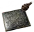
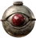
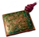
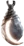
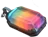
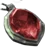
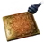
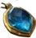
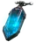
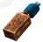

Heyday
Hacked Ammy of the Huntress
Amulet
Required Level: 60
+2 to Amazon Skill Levels
+2 to Necromancer Skill Levels
+100% to All Resistances
+20 to all Attributes
Unique Amulet
Hacked Ammy of the Huntress
- Type
- Amulet
- Base
- Amulet
- Required level
- 60
- Item level
- 75
Other unique Amulets

Nokozan Reliclevel 10
The Eye of Etlichlevel 15
The Mahim-Oak Curiolevel 25- The Cat's Eyelevel 50
- The Rising Sunlevel 65

Crescent Moonlevel 68
Mara's Kaleidoscopelevel 67
Atma's Scarablevel 60
Highlord's Wrathlevel 65
Saracen's Chancelevel 55
Seraph's Hymnlevel 65
Metalgridlevel 81